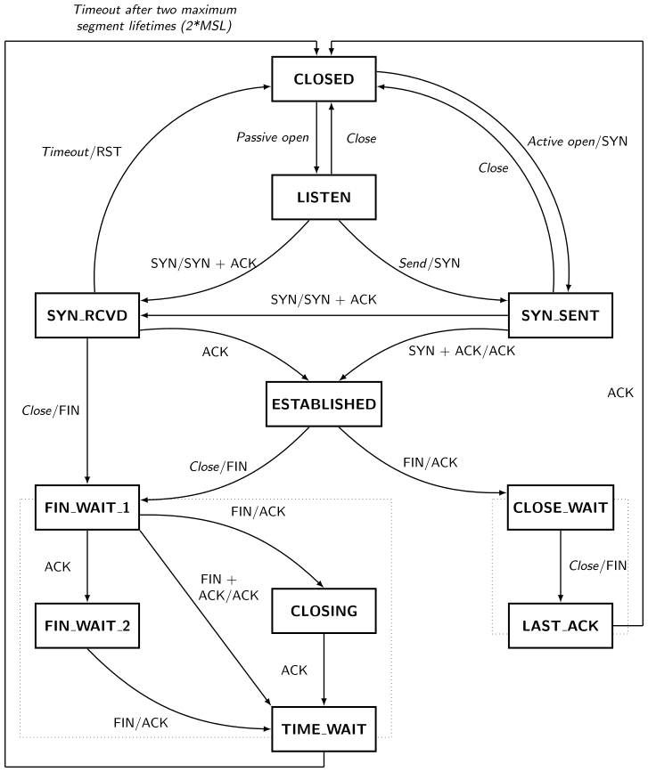

Seven Days of Creation
Posted on Sun 18 September 2022 in Programming
Our networks course required us to construct a peer-server-peer file transfer protocol, wherein once chunks of the file are evenly distributed to different clients, the clients contact the server for chunks they don't have, and the server in turn queries all other clients if they have the chunk. If they do, they send it back to the server, which in turn relays it back to the client. This continues until all connected parties have the complete file.
A thread-based implementation in Python was suggested, but given the requirements, I decided to go one level deeper: make a C++-based implementation with non-blocking sockets and asynchronous IO.
Day One
In the beginning, God created sockets. Now the sockets were isolated, unable to connect to anything on the system. And God said, "Let there be syscalls", and there were syscalls.
Having decided to go as close to the metal as I could for performance reasons (the assignment requirements stated that we'd have to transfer a 100 MB file to 100 clients simultaneously, in a reasonable amount of time), I decided to cut no corners. Fortunately, socket programming is very well documented, and is actually one of the more reasonable subsystems of the Linux/BSD kernel (POSIX sockets API FTW!).
There are a lot of guides online for this, but the best one is Beej's network programming guide, now updated for IPv6 ^_^. This goes through the basics of a lot of what is needed, namely the socket syscalls (socket, bind, connect, accept, send, recv, sendto, recvfrom, close) and a lot of other things, such as getting address information, setting socket options with setsockopt (and the various options available), making sockets nonblocking, as well as a small tutorial on select for asynchronous IO1.
I won't be repeating whatever was mentioned there, but a few things that tripped me up were:
-
SO_REUSEADDR. Yep. The first time I read about this flag, I understood nothing. It was only after I could not reconnect to my server immediately after shutting it down did I realize that something's up. TCP's TIME_WAIT state persists after the application has shut down, which is why if you close and restart a socket at the same port, it won't immediately rebind, as there may still be a FIN/ACK message out on the network, bound for this port. If that hits the second application, it would cause that application's port to shut down, which is why TIME_WAIT waits for 2 maximum segment lifetimes (approx. 30 to 120 seconds). Here's a TCP state diagram to help out, if the above didn't make sense -
SO_RCVLOWAT. TCP is a stream protocol, and not a datagram protocol, and I think nobody makes it obvious what the differences are between them.- Reading from a SOCK_STREAM port (TCP) is like sucking bits from a straw on the network.
recv(fd, buf, len, flags)will read2 atmostlenbytes fromfd's read buffer tobuf. It doesn't care whether the bytes were part of a previous message, or if it's two messages, it will just read that many bytes in. If the entire message hasn't reached, it will read less thanlenbytes, and return the number of bytes read (basically reading partial messages). - Reading from a SOCK_DGRAM port (UDP) is like eating potato chips from a pringles tube, one at a time.
recv(fd, buf, len, flags)on a UDP port will read min(len,size of one datagram) into buf. This means that you only get single datagrams. The port will read an incomplete datagram only if len is less than the size of one datagram, otherwise you're guaranteed to read the complete datagram in, notwithstanding system/network errors.
So, how do we emulate UDP's 'chunking' in TCP? The
SO_RCVLOWATparameter sets a low water mark for the socket read buffer: we are only alerted of a read if the number of bytes in the read buffer are more than those set by this flag (a blocking read will wait until the number of bytes is more than this, or the socket has closed). By setting the low water mark and our buffer length to the size of one 'packet' of information that we are expected to receive, we can read only one packet at a time, cleanly separated from the rest of the byte stream. Neat! - Reading from a SOCK_STREAM port (TCP) is like sucking bits from a straw on the network.
-
Respect the error message! I cannot stress on this enough. Always, ALWAYS check what these syscalls are returning. You'll save yourself a lot of pain. An example: this is terrible code
// some code here
getaddrinfo(nullptr, std::to_string(port).c_str(), &hints, &res);
uintptr_t fd = socket(res->ai_family, res->ai_socktype, res->ai_protocol);
const int reuse = 1;
setsockopt(fd, SOL_SOCKET, SO_REUSEADDR, &reuse, sizeof(reuse));
bind(fd, res->ai_addr, res->ai_addrlen);
fcntl(fd, F_SETFL, O_NONBLOCK);
freeaddrinfo(res);
// more code here
Do you see the error? Exactly. You'll never see the error, until it blows up in your face 500 lines later. Your server needs to fail fast while debugging. There's no shame in throwing assert statements around like confetti.
std::string errstr(std::string msg) {
return msg + " (errno " + std::to_string(errno) + ")";
}
// ...
int ret = getaddrinfo(nullptr, std::to_string(port).c_str(), &hints, &res);
assert (ret != -1 and errstr("Could not get address information"));
uintptr_t fd = socket(res->ai_family, res->ai_socktype, res->ai_protocol);
assert (fd != -1 and errstr("Could not create socket"));
const int reuse = 1;
ret = setsockopt(fd, SOL_SOCKET, SO_REUSEADDR, &reuse, sizeof(reuse));
assert (ret != -1 and errstr("Could not set SO_REUSEADDR option"));
ret = bind(fd, res->ai_addr, res->ai_addrlen);
assert (ret != -1 and errstr("Could not bind socket to port"));
// ...
Day Two
And God said, "Let there be an event loop so that sockets can know when they have to read and write", So God made an event loop and registered his sockets to it.
Possibly the most fun part of this entire exercise. Event loops allow you to write superfast single-threaded concurrent servers, simply because the OS doesn't need to schedule a bunch of threads waiting for their clients to reply to them. In macOS (and other BSD distros), the kernel uses kevent for the event queue, but if you're looking to port to linux, libkqueue works like a charm (just make sure to build and install the latest version: the ones on the default package repositories are outdated and have bugs).
Event loops and the reactor pattern are not-so-easy to understand, so here and here were some good resources I referred to. A broad overview (when applied to sockets) is:
- Each socket has a file descriptor, along with a read/write buffer (in the kernel).
- An event queue allows us to register this file descriptor with the queue, such that we are alerted when we can read/write from this file.
What does an event queue look like? Here's a (rough) abstraction from my code:
struct event_t {
int fd;
int filter;
void* data;
}
class EventQueue {
public:
EventQueue();
void add_event(const event_t& e);
void delete_event(const event_t& e);
std::vector<event_t> get_events();
void close();
}
simple enough. Where does the event loop come in? The loop is responsible for polling the event queue and processing the events that occur
void run() {
EventQueue evtq;
// add events here
while (running) {
auto evts = evtq.get_events();
for (const auto& e : evts) {
// process e;
}
}
}
Generally, a callback-like structure is employed within the event loop
std::unordered_map<int,std::function<void()>> read_callbacks;
//...
void register_read_callback(int fd, std::function<void()> f) {
read_callbacks[fd] = f;
}
// inside the event loop
for (const auto& e : evts) {
// ...
if (e.filter == EV_READ) read_callbacks[e.fd]();
// ...
}
Short and sweet, add more callbacks as needed.
There's a very nice kqueue tutorial here, which goes into more specifics; stuff such as timers and one-shot events, but read/write events on sockets should be enough to scale.
Day Three
And God said, "Let there be a client to keep the server company", and it was so. God made a client using the same principles as the server, and God saw that it was good.
The client was basically a mini-server, with a TCP and UDP port, that used the same event-loop based architecture to simultaneously transmit messages and receive file chunks. Once the protocol is implemented and the server is created, implementing a client is a relatively simple exercise, and was easy to do.
One additional feature of kevent that I used were timers: if a request packet (over UDP) drops, then we won't receive a chunk in response to it. The way I solved this is to have a timer event every second, and a map that stores which chunk ID's are currently requested, and when those requests were sent out. Every second, when the timer event triggers, we check if there are any requests sent to which we haven't received a response in 5 seconds, and we resend these requests. Adding timer events to kqueue is relatively straightforward, just that the documentation doesn't make it clear whether we have to pass the time (in milliseconds) or a pointer to the time. The former works, but not the latter (even though struct kevent has the type of data as intptr_t)
struct kevent evt;
uint32_t fd = 6000;
uint32_t period_in_ms = 1000;
EV_SET(&evt, fd, EVFILT_TIMER, EV_ADD|EV_ENABLE, 0, period_in_ms, NULL);
kevent(_kq, &evt, 1, NULL, 0, NULL);
fd was chosen as 6000 as this is large enough to not clash with anything else. I couldn't think of a better way to choose a descriptor for a timer. If you do know of one (allocating a file descriptor which won't clash with other file descriptors), do let me know in the comments :)
Day Four
And God said, "Let there be two implementations of the protocol, for testing purposes", and it was so. God set about refactoring the codebase, abstracting the interfaces and implementation out, and when he was done, he saw that it was good.
This was probably the most frustrating part: after three straight days of programming, I realized that to switch protocols, I'd have to do it all over again. This is where effective design comes into picture: rather than making a hacky proof-of-concept server, abstracting out the various things that would have separate implementations from the start would've made this exercise very easy.
I set about redesigning the server. Fortunately, a full rewrite wasn't needed, and a lot of the components could just be reused directly. For changing the protocol, I defined the interfaces in a header file, and implementation-specific versions in a source file. This allows me to change the implementation at compile time rather than in source (which would need me to subclass Server and override these methods). All I need to do now to change the protocol is make proto=TCP instead of normal make.
The makefile flags to do something like this are:
ifeq ($(PROTO), TCP)
SRC_SERVER += <tcp implementation files>
...
SERVER := bin/server_tcp
...
else
SRC_SERVER += <udp implementation files>
...
SERVER := bin/server_udp
...
endif
The final source design looked like this (leaving out other non-relevant items)

Day Five
And God said, "Let this bounty be available to the users of Linux as well", and it was so. God did not have a working Linux machine, so he created a QEMU VM to run Manjaro and to compile the code, and when he was done, he saw that it was good.
The Linux machine I'd gotten from home had a broken keyboard, and my Raspberry Pi was not connecting to the cellular network (apparently my cellphone provider switched from an ipv4 to an ipv6 network, so arp-scan and everything was a mess; I couldn't locate my pi's IP, and an iPhone being an iPhone, doesn't let you see the IP of the devices connected to it's WiFi hotspot.)
After messing around with an ethernet cable, a friend's laptop and computer-to-computer WiFi connections, I decided to leave the option of connecting to another machine, and instead run a VM on my machine. I already had QEMU installed, but had never figured out how to use it. The next day, I downloaded an Ubuntu 20.04 server image from online, only to find out that it doesn't have a default password, and an ISO containing login credentials had to be booted with the image to allow you to login, and that too only via SSH.
Noped out of that pretty quick. I then downloaded a Manjaro3 image, and installed and ran that painlessly.
QEMU is a charm: it barely uses any CPU while idling, and boots lightning fast. Forwarding an SSH port to it is also very easy. Will probably play around with more exotic machines on qemu, but that's for another post :)
With access to a linux machine, there were two choices:
- Use a compatiability layer to get kqueue functionality: libkqueue, as previously mentioned, hadn't worked on an ubuntu machine because of an old version (a fact I didn't know till then)
- Write an epoll implementation of my abstracted event queue
I really didn't want to do (2), but it looked like there was no choice. I decided to give libkqueue a final chance on linux, and since it was not available on manjaro default repositories, I downloaded and compiled from source.
And it worked! I had to link the library with -lkqueue and -lpthread, so made some linux-specific flags for that. I can now see why cmake is such a popular build tool, as this os-dependent complexity would only increase with more modules
ifneq ($(OS),Windows_NT)
uname_os := $(shell uname)
ifneq ($(uname_os),Darwin)
CPPFLAGS += -I/usr/include/kqueue
LFLAGS += -lkqueue -lpthread
endif
endif
Day Six
And God said, "Let there be a client manager to spawn clients, so that I may be absolved of the burden of testing", and it was so. God crafted a client manager using threads, and did the server benchmarks, and he saw that they were good.
This (and benchmarking) were boring but rewarding. For starters, a few changes had to be made in the protocol to make it a bit more reliable, and then some bookkeeping code had to be written for clients so that they could save their packet request round trip times to files, and also be called independently and run on separate threads. Once that was done, I created a client manager that took care of spawning a bunch of clients and making requests to the server
The load benchmarks were great, for small files. For large files, I was transferring around 50kb/sec to 50 clients each, on my machine. Note that if you simulate a large number of clients, your server CPU allocation will be disproportionate to the number of clients: for a 100 clients, my server was using only 3-4% of the processor, while the clients were using ~90%. Something to keep an eye out for. Or just use a more powerful machine with more cores while simulating.
Here are some numbers. For context, A2_small_file.txt is a 100kB text file.

Day Seven
Thus, the clients and server were completed in all their vast array, so on the seventh day, God rested from all his work. Then God
Blessed the seventh day and made it holyCursed himself for having spent so much time on one assignment, when there were four more to do, and minors would begin in a week
If you felt like this article was too fast, or too poorly written, you now know why :')
Since the assignment deadline is still not over, I've consciously not divulged many specifics. Will probably release a follow-up on the protocol and client-server design itself later on.
Footnotes
1 select can handle only 1024 events, and is linear in time, which makes it a very bad choice. More modern implementations use kqueue(BSD/macOS), epoll(Linux) or IOCP(Windows). A cross-platform option is to use libevent.
2 recv will block (wait until there are nonzero bytes in the read buffer) if the socket is blocking, and will read atmost len bytes to buf (the number of bytes read are returned by the syscall). If the socket is non-blocking, recv may return 0 if there's nothing in the buffer to read. Note that if a blocking recv returns 0, it means that the connection has been disconnected (why? Don't really know, but I guess it's because there's an EOF residing in the buffer, sent by the other party, up to which recv reads, and then there's nothing left to read but the EOF).
3 Tired of all the *buntu distros, and had experience with arch (loved the rolling distro functionality), so needed an arch experience with minimal effort.